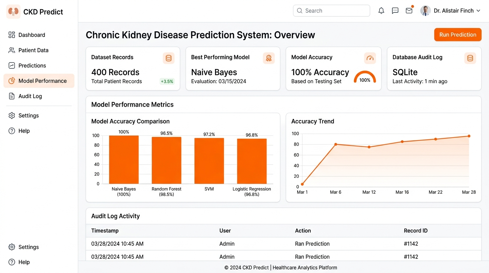
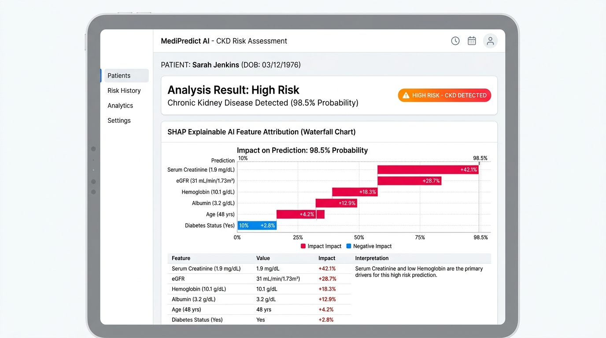

"An ML-based system for predicting the likelihood of Chronic Kidney Disease from patient health parameters"

Addressing early detection challenges in renal healthcare through machine learning decision support
Empirical statistics from the UCI Chronic Kidney Disease benchmark dataset
Multi-stage machine learning pipeline strictly fitted on training folds to prevent data leakage
Live web application architecture built with React 19, Tailwind CSS, and FastAPI

Summary of completed prototype deliverables vs planned research enhancements